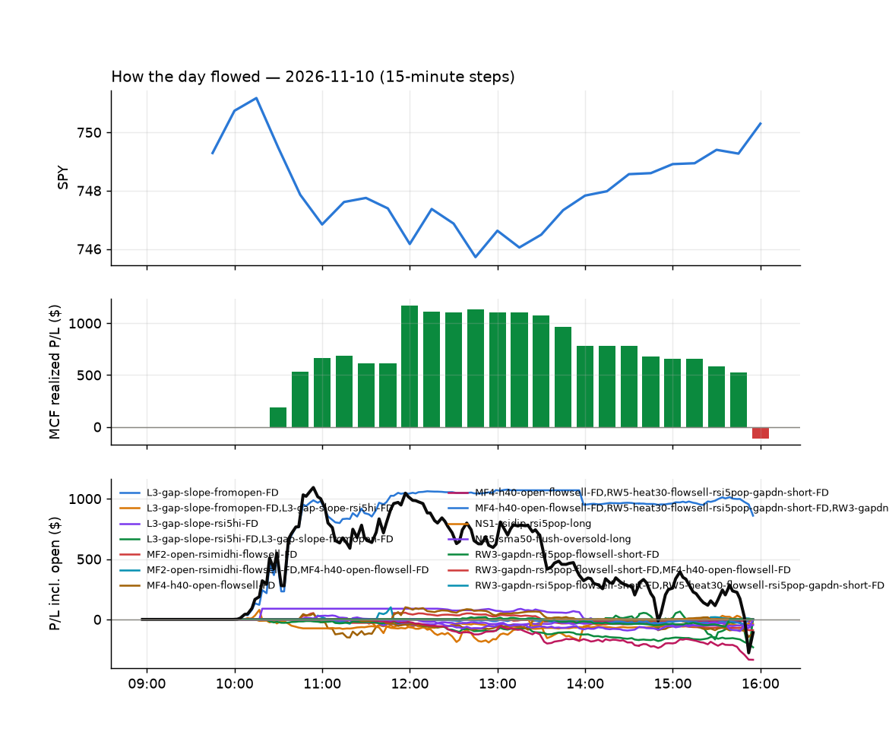
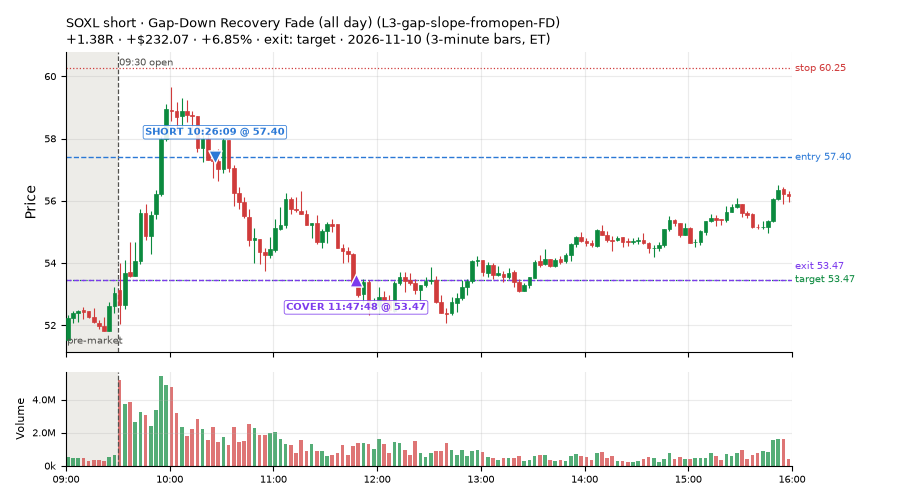
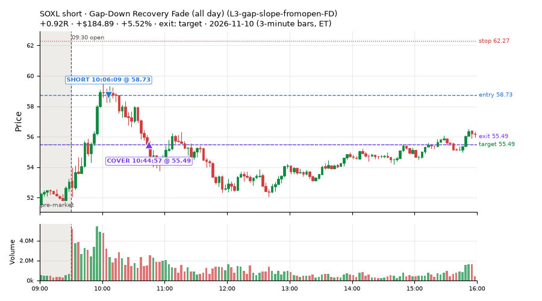
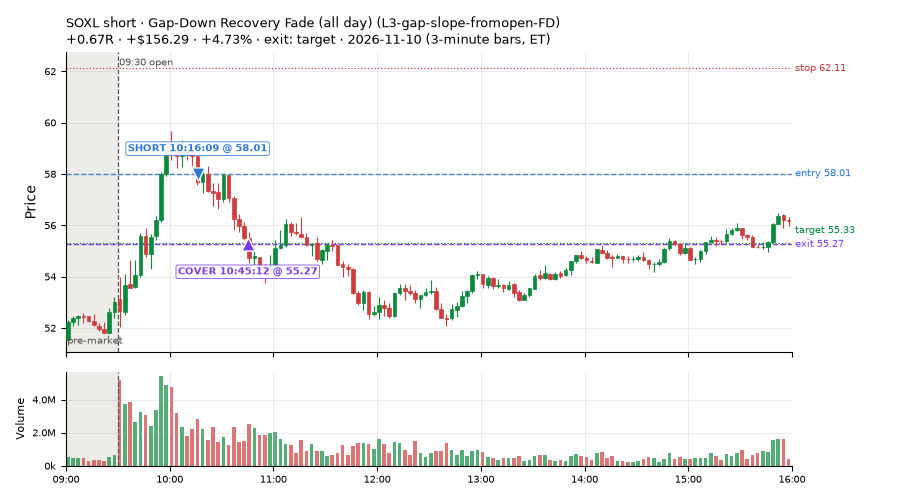
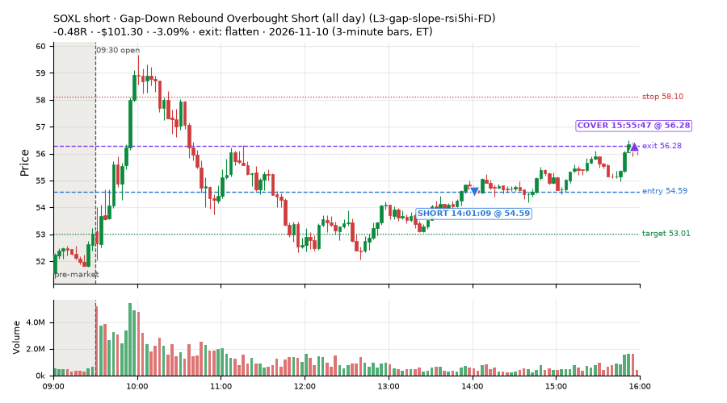
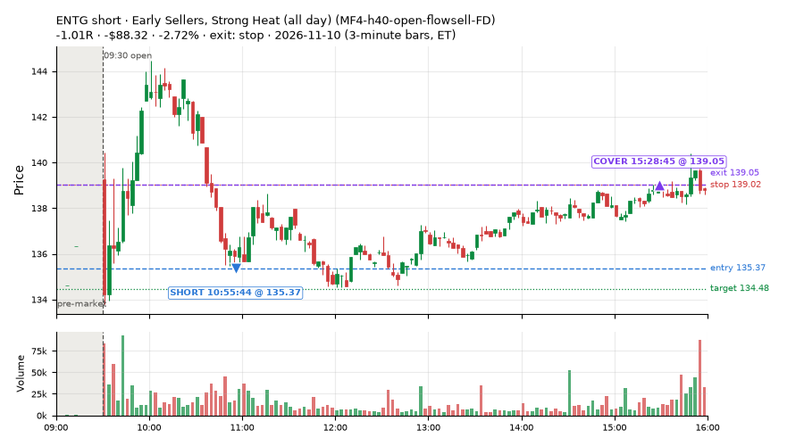
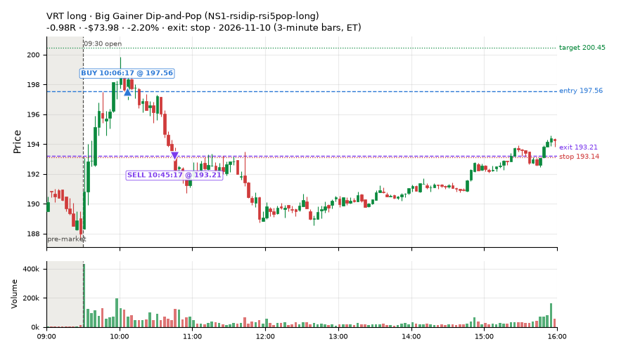
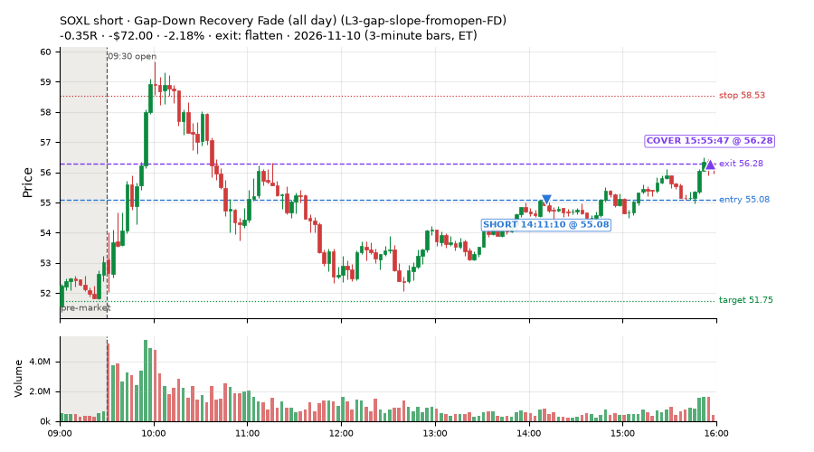
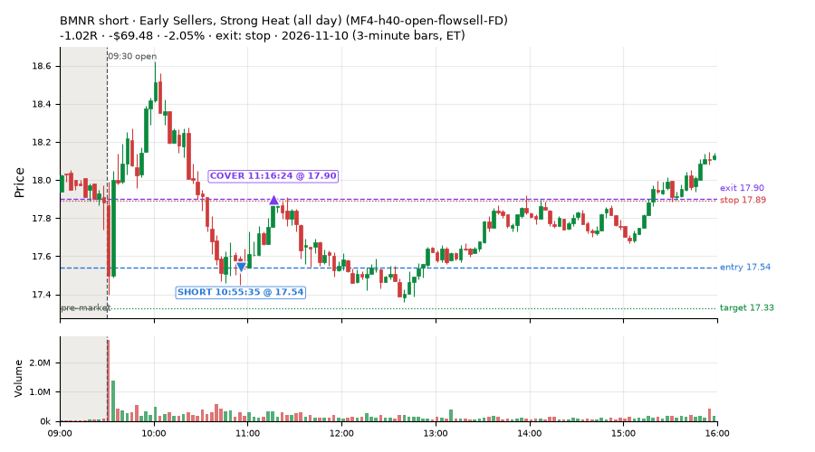

99 trades · win rate 31% · P/L $-109.40
PROBATION: no live setup has passed both locked test periods. 10 owner-directed setups added 2026-10-08 (MarcoFlow top 5 + 5 new), untested live. RW6G1 (RW6 + VWAP band guard) added 2026-10-09, probation.

| Symbol | Setup | Side | In | Out | Entry | Exit | Exit reason | % gained | P/L |
|---|---|---|---|---|---|---|---|---|---|
| SOXL | Gap-Down Recovery Fade (all day) (L3-gap-slope-fromopen-FD) | short | 10:26 | 11:47 | 57.40 | 53.47 | target | +6.85% | $232.07 |
| SOXL | Gap-Down Recovery Fade (all day) (L3-gap-slope-fromopen-FD) | short | 10:06 | 10:44 | 58.73 | 55.49 | target | +5.52% | $184.89 |
| SOXL | Gap-Down Recovery Fade (all day) (L3-gap-slope-fromopen-FD) | short | 10:16 | 10:45 | 58.01 | 55.27 | target | +4.73% | $156.29 |
| Symbol | Setup | Side | In | Out | Entry | Exit | Exit reason | % lost | P/L |
|---|---|---|---|---|---|---|---|---|---|
| SOXL | L3-gap-slope-rsi5hi-FD | short | 14:01 | 15:55 | 54.59 | 56.28 | flatten | -3.09% | $-101.30 |
| ENTG | MF4-h40-open-flowsell-FD | short | 10:55 | 15:28 | 135.37 | 139.05 | stop | -2.72% | $-88.32 |
| VRT | NS1-rsidip-rsi5pop-long | long | 10:06 | 10:45 | 197.56 | 193.21 | stop | -2.20% | $-73.98 |
| SOXL | L3-gap-slope-fromopen-FD | short | 14:11 | 15:55 | 55.08 | 56.28 | flatten | -2.18% | $-72.00 |
| BMNR | MF4-h40-open-flowsell-FD | short | 10:55 | 11:16 | 17.54 | 17.90 | stop | -2.05% | $-69.48 |








Signal to fill: median 2s, 90th percentile 6s (99 trades). Bars close each minute; the order follows the bar close.
Best excursion (MFE): median 0.28R; worst (MAE) median 0.75R. 43% of trades never got +0.25R in our favour; 0 reached +1R and still closed at or below 0.
| Symbol | Setup | Best R | Worst R | Closed R |
|---|---|---|---|---|
| ERY | NS5-sma50-flush-oversold-long | +0.98 | -1.02 | -1.02 |
| S | MF2-open-rsimidhi-flowsell-FD | +0.60 | -1.12 | -1.07 |
| NUGT | MF2-open-rsimidhi-flowsell-FD | +0.53 | -1.04 | -0.97 |
| NDAQ | MF4-h40-open-flowsell-FD | +0.38 | -1.08 | -1.08 |
| NDAQ | RW5-heat30-flowsell-rsi5pop-gapdn-short-FD | +0.39 | -1.06 | -1.05 |
| Entry time | Trades | Win | Avg R | P/L |
|---|---|---|---|---|
| 09:50-10:30 | 13 | 85% | +0.55 | $1,043.30 |
| 10:30-11:30 | 24 | 33% | -0.35 | $-271.77 |
| 11:30-13:00 | 42 | 24% | -0.43 | $-436.66 |
| 13:00-14:00 | 12 | 8% | -0.66 | $-159.90 |
| 14:00-16:00 | 8 | 12% | -0.28 | $-284.37 |
| Setup | Trades | Win | Avg R | Adj R (net of SPY) | Avg R ex-market (all sessions) | P/L |
|---|---|---|---|---|---|---|
| Gap-Down Recovery Fade (all day) (L3-gap-slope-fromopen-FD) | 18.0 | 67% | +0.35 | +0.34 | +0.01 (beta -1.18, n 63) | $859.56 |
| Gap-Down Rebound Overbought Short (all day) (L3-gap-slope-rsi5hi-FD) | 7.0 | 29% | -0.38 | -0.29 | -0.37 (beta -0.78, n 22) | $-114.99 |
| Early Sellers, Mid-High RSI (all day) (MF2-open-rsimidhi-flowsell-FD) | 9.0 | 11% | -0.66 | -0.36 | -0.18 (beta -2.89, n 111) | $-89.39 |
| Early Sellers, Strong Heat (all day) (MF4-h40-open-flowsell-FD) | 20.0 | 40% | -0.25 | -0.09 | -0.26 (beta -1.42, n 126) | $-112.87 |
| Big Gainer Dip-and-Pop (NS1-rsidip-rsi5pop-long) owner-directed; holdouts once: Sep-Oct +0.326R n10, Apr-Jun +0.056R n119 | 4.0 | 50% | -0.06 | -0.06 | -0.01 (beta +0.63, n 23) | $-39.32 |
| Big Loser Flush Buy (NS5-sma50-flush-oversold-long) owner-directed; holdouts once: Sep-Oct -0.008R n73, Apr-Jun +0.002R n231 | 2.0 | 0% | -0.58 | -0.64 | +0.15 (beta +0.75, n 29) | $-46.98 |
| Gap-Down Pop Fade, Heavy Selling (all day) (RW3-gapdn-rsi5pop-flowsell-short-FD) | 17.0 | 18% | -0.50 | -0.21 | +0.15 (beta -1.17, n 102) | $-231.07 |
| Gap-Down Pop Fade (all day) (RW5-heat30-flowsell-rsi5pop-gapdn-short-FD) | 22.0 | 14% | -0.56 | -0.08 | +0.13 (beta -1.05, n 122) | $-334.34 |
Market direction (SPY, beta 1) accounted for $-524.15 of today's $-109.40; the rest ($414.75) came from the setups themselves. Avg R net of SPY: -0.08 (incl. a hedge leg's cost; report only).
10 setups live today. Today: 465 signals, 99 taken, 22 lost because another setup held the symbol (5%). Since 2026-10-06 (26 sessions): 3654 signals, 1104 taken, 170 lost to other setups (5%). Peak open positions today 54 of 77 slots. Earnings blackout removed 1250 symbols before scanning.
Simulated playing time (not live): 2527 what-if trades of signals not taken, avg -0.06R, 53% winners; of them 170 lost to another setup (avg -0.17R).
Silent: intraday_momentum · Crowded out: MF4-h40-open-flowsell, MF3-open-flowsell-rsi5hi, MF5-flowsell-vwapup-rsi5hi · Starved: MF2-open-rsimidhi-flowsell
| Prio | Setup | Today sig / taken | Sessions | Signals / taken / trades | Taken/day | Expected/day | Lost to other setups | Lost to (setup n) | Top skip reasons | SIMULATED: not-taken n / avg R / win | Verdict |
|---|---|---|---|---|---|---|---|---|---|---|---|
| 1 | Gap-Down Pop Fade (all day) RW5-heat30-flowsell-rsi5pop-gapdn-short-FD | 39 / 22 | 18 | 180 / 122 / 122 | 6.78 | 12.79 | 0 | – | daily loss cap 20, spread / quote / size 20, not shortable / shorts off 18 | 58 / -0.10R / 43% | ok 33.9 entries/week |
| 2 | Gap-Down Pop Fade, Heavy Selling (all day) RW3-gapdn-rsi5pop-flowsell-short-FD | 33 / 17 | 18 | 191 / 102 / 102 | 5.67 | 13.59 | 1 | CWT14-failbrk-pdl-p10-lowvol-long 1 | daily loss cap 33, not shortable / shorts off 30, spread / quote / size 25 | 89 / +0.10R / 55% | ok 28.3 entries/week |
| 3 | Early Sellers, Mid-High RSI (all day) MF2-open-rsimidhi-flowsell-FD | 29 / 9 | 16 | 244 / 111 / 111 | 6.94 | 10.09 | 4 | RW5-heat30-flowsell-rsi5pop-gapdn-short-FD 4, RW3-gapdn-rsi5pop-flowsell-short-FD 4, MF2-open-rsimidhi-flowsell-FD 4 | spread / quote / size 62, not shortable / shorts off 37, daily loss cap 30 | 133 / -0.32R / 28% | ok 34.7 entries/week |
| 4 | Early Sellers, Strong Heat (all day) MF4-h40-open-flowsell-FD | 37 / 20 | 16 | 283 / 126 / 126 | 7.88 | 16.45 | 5 | RW5-heat30-flowsell-rsi5pop-gapdn-short-FD 5, RW3-gapdn-rsi5pop-flowsell-short-FD 4, MF2-open-rsimidhi-flowsell-FD 4 | not shortable / shorts off 68, daily loss cap 43, spread / quote / size 41 | 156 / -0.08R / 60% | ok 39.4 entries/week |
| 5 | RSI Collapse Dip Buy (all day) ST7-rsi50dn-long-pm-t1s1-FD | 0 / 0 | 12 | 42 / 21 / 21 | 1.75 | 2.17 | 0 | – | spread / quote / size 19, daily loss cap 2 | 21 / +0.21R / 57% | slow 8.8 entries/week; ~7 weeks to 60 trades |
| 6 | Gap-Down Rebound Overbought Short (all day) L3-gap-slope-rsi5hi-FD | 61 / 7 | 8 | 424 / 22 / 22 | 2.75 | – | 4 | L3-gap-slope-fromopen-FD 4 | not shortable / shorts off 331, daily loss cap 41, spread / quote / size 26 | 385 / +0.04R / 70% | slow 13.8 entries/week; ~4 weeks to 60 trades |
| 7 | Gap-Down Recovery Fade (all day) L3-gap-slope-fromopen-FD | 244 / 18 | 10 | 1348 / 63 / 63 | 6.30 | – | 31 | L3-gap-slope-fromopen-FD 31, L3-gap-slope-rsi5hi-FD 14 | not shortable / shorts off 1115, daily loss cap 100, spread / quote / size 38 | 1282 / -0.06R / 50% | ok 31.5 entries/week |
| 8 | Big Gainer Dip-and-Pop NS1-rsidip-rsi5pop-long | 5 / 4 | 24 | 30 / 23 / 23 | 0.96 | 0.92 | 0 | – | spread / quote / size 7 | 7 / +0.19R / 86% | slow 4.8 entries/week; ~13 weeks to 60 trades |
| 9 | Big Loser Flush Buy NS5-sma50-flush-oversold-long | 2 / 2 | 24 | 46 / 29 / 29 | 1.21 | 2.41 | 0 | – | daily loss cap 13, spread / quote / size 4 | 17 / +0.04R / 53% | slow 6.0 entries/week; ~10 weeks to 60 trades |
| 10 | Early Sellers, Strong Heat MF4-h40-open-flowsell | 15 / 0 | 24 | 149 / 21 / 21 | 0.88 | 7.24 | 76 | MF4-h40-open-flowsell-FD 71, MF2-open-rsimidhi-flowsell-FD 10, MF3-open-flowsell-rsi5hi-FD 4 | symbol held by another setup 76, spread / quote / size 29, not shortable / shorts off 22 | 128 / -0.22R / 54% | crowded-out 76 of 149 signals (51%) lost to setups already holding the symbol |
Every trade is attached as a CSV you can open and edit in Excel or Google Sheets. Live page: https://misiti15.github.io/MCF/live/